Questão 1 · Cardiotocograf ia intraparto · Cardiotocograf ia anteparto · Parâmetros da cardiotocograf ia · 4000184798Pode-se a rmar que no sistema de interpretação da frequência cardíaca fetal (FCF) na cardiotocogra a em três categorias, representa melhor a categoria 3:
A aceleração presente.
B desacelerações variáveis repetidas (> 50%).
C desaceleração precoce presente.
D variabilidade da FCF basal moderada.
Questão 2 · Avaliação da vitalidade f etal · Obstetrícia · 4000184712Durante a condução de um trabalho de parto em uma gestante hipertensa, ao ser realizado exame cardiotocográ co, foram observadas desacelerações intraparto (DIP) do tipo II ou tardios. Esta alteração está relacionada a:
A Insuficiência placentária e hipóxia fetal.
B Desacelerações decorrentes de compressão funicular.
C Compressão do polo cefálico durante as contrações uterinas.
D Desacelerações variáveis devido à diminuição do líquido amniótico.
Revisar: possível letra faltando em enunciado
Questão 3 · Artéria umbilical · 4000184615Paciente 39 anos, G3P2A0, nenhum lho vivo, gestação de 32 semanas, hipertensa crônica de difícil controle, em uso de metildopa 2 gramas por dia e amlodipina 5mg por dia. Ultrassonogra a mostra restrição de crescimento intraútero, circunferência abdominal percentil <10. Sobre a dopplervelocimetria fetal para esse caso, é CORRETO afirmar que:
A O último estágio do aumento da resistência na artéria umbilical identificado pelo doppler é a inversão do fluxo sanguíneo durante a diástole.
B A resistência ao fluxo sanguíneo nas artérias umbilicais é inversamente proporcional às condições da circulação uteroplacentária.
C Com a evolução da insuficiência uteroplacentária o aumento da resistência ao fluxo sanguíneo na artéria umbilical não impede o fluxo sanguíneo durante a diástole.
D O estado de centralização pode ser mensurado através do estudo da artéria cerebral média, que demonstrará diminuição do fluxo diastólico e da resistência em sua circulação.
Questão 4 · Avaliação da vitalidade f etal · Cardiotocograf ia CTB · Obstetrícia · 4000184128Gestante de 25 anos, 3G:2PN, chega ao pronto-socorro referindo dor em hipogástrio há 3 horas. Hoje com 33 semanas e 2 dias de gestação. Ao exame clínico: PA 113x76 mmHg, FC 74 bpm, presença de duas contrações uterinas por 10 minutos de fraca intensidade. Toque vaginal com colo grosso, posterior, pérvio para 3 cm, apresentação cefálica alta e móvel. Após analgesia, refere melhora das dores. Foi feita uma reavaliação do exame obstétrico que não demonstrou evolução do colo uterino, permanecendo com a mesma dilatação. Realiza a cardiotocografia apresentada. Qual é a conclusão desta cardiotocografia?

A Reatividade fetal após estímulo.
B Ausência de movimentação fetal.
C Atividade uterina excessiva.
D Bem-estar fetal.
Questão 5 · Dopplervelocimetria Doppler · Avaliação da vitalidade f etal · Obstetrícia · 4000183342O aumento do pico sistólico da artéria cerebral média, na avaliação da anemia fetal, se deve por:
A Vasoconstrição periférica.
B Diminuição do retorno venoso.
C Diminuição da viscosidade sanguínea.
D Diminuição da contratilidade miocárdica.
Questão 6 · Cardiotocograf ia CTB · Obstetrícia · 4000182290Paciente GIIIPIIAI, com 37 semanas e 5 dias de gravidez, é admitida na emergência com queixa de perda líquida há duas horas. Refere hipertensão arterial crônica em uso de 750mg/dia de metildopa. Ao exame de admissão, apresenta metrossístoles 1/10’/35”, BCF de 144bpm, movimentação fetal ativa. Ao toque vaginal, observa-se colo posterior, 50% apagado, 2cm dilatado, cefálico, líquido tinto de mecônio. A imagem a seguir refere-se à cardiotocogra a realizada na admissão: Nesse caso, a desaceleração encontrada no exame está relacionada à:
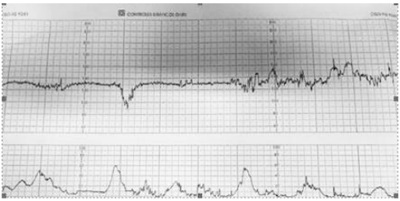
A hipertensão arterial crônica
B compressão do polo cefálico
C presença de líquido meconial
D rotura prematura de membranas ovulares
Questão 7 · Dopplervelocimetria Doppler · Restrição de crescimento f etal RCF · Obstetrícia · 4000181268S.T.B., 36 anos, GII PI 1C A0, IG usg: 34 semanas, deu entrada no PSO com queixa de escotomas, dor em hipocôndrio direito e náuseas. PA de 150 x 100 mmHg. Nega aumento de PA prévio. Ausência de edema de membros inferiores. Rotina de pré-eclâmpsia: relação proteína na urina/creatinina na urina de 0,4, TGO 20, TGP 25, hb 11, htco: 33, plaquetas: 160.000, DHL 400, Bb totais de 0,8; Cr 0,9. Paciente submetida a ultrassom obstétrico com doppler que identi cou: peso fetal no percentil 4, ILA normal, placenta anterior, GIII, feto em apresentação cefálica. Doppler de artéria umbilical, conforme imagem a seguir. De acordo com a figura, assinale a interpretação correta do doppler fetal.
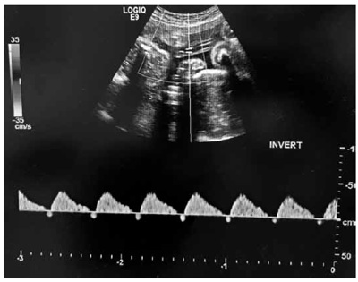
A Diástolo zero na artéria umbilical.
B Artéria umbilical com diástole reversa.
C Diminuição do índice de pulsatilidade em artéria umbilical.
D Aumento do índice de pulsatilidade em artéria cerebral média.
E Relação cérebro placentária normal.
Questão 8 · Conduta · Obstetrícia · 4000178536Tercigesta, com ambas as gravidezes anteriores acometidas por pré-eclâmpsia, apresenta restrição de crescimento fetal intrauterino por insu ciência placentária. Encontra-se na 35ª semana de gestação, com dopplervelocimetria da artéria umbilical com diástole zero, mas com duto venoso normal. Qual é a conduta obstétrica indicada para essa paciente?
A Cesariana eletiva.
B Neuroproteção fetal.
C Perfil biofísico fetal a cada 3 dias.
D Dopplervelocimetria fetal a cada semana.
Questão 9 · Obstetrícia · Variáveis · 4000177450O objetivo primordial da avaliação fetal antenatal é identi car fetos de risco para eventos adversos ou para o óbito e, assim, atuar preventivamente para evitar o insucesso. O per l biofísico fetal atinge sua máxima e ciência quando aplicado dentro do contexto clínico de cada caso. O perfil biofísico fetal avalia
A ILA, movimentação fetal, movimentos respiratórios fetais, cardiotocografia e tônus fetal.
B movimentos respiratórios fetais, artéria cerebral média, tônus fetal, ILA e movimentação fetal.
C ILA, movimentação fetal, cardiotocografia, maturidade placentária e movimentos respiratórios fetais.
D movimentos respiratórios fetais, ILA, ducto venoso, maturidade placentária e tônus fetal.
Questão 10 · Avaliação da vitalidade f etal · Obstetrícia · 4000173555Analise a cardiotocografia na figura abaixo, segundo os parâmetros técnicos descritos: Velocidade da realização do exame: 1cm/minuto. Batimento cardíaco fetal (bpm) mínimo registrado na figura: 60 bpm. Batimento cardíaco fetal (bpm) máximo registrado na figura: 200 bpm. Variação do bpm registrada na figura: 20 bpm. Assinale a alternativa CORRETA.
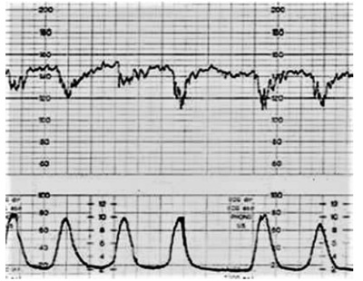
A Trata-se de hipóxia fetal, sugerindo sofrimento fetal agudo.
B Observa-se uma síndrome de hiperestimulação uterina.
C Sugere-se compressão do cordão umbilical, com desaceleração de bom prognóstico.
D É provável uma compressão do polo cefálico, mediada pelo nervo vago.
E Sugere-se compressão do cordão umbilical, com desaceleração de prognóstico ruim.
Questão 11 · Avaliação da vitalidade f etal · Obstetrícia · 4000171008A doppler uxometria permite avaliar de forma mais apurada os territórios arterial e venoso e intervir mais oportunamente nas gestações de alto risco, em especial aquelas com crescimento intrauterino restrito. Em condições siológicas, com feto saudável, as resistências nas artérias umbilical e cerebral média, respectivamente, estão:
A diminuída / diminuída
B diminuída / aumentada
C aumentada / diminuída
D aumentada / aumentada
Questão 12 · Avaliação da vitalidade f etal · Obstetrícia · 4000169291Durante a condução de um parto por via vaginal, aos 6 centímetros de dilatação, foi realizado exame cardiotocográfico que mostrou a ocorrência de desacelerações periódicas da frequência cardíaca fetal, após as contrações uterinas (DIP II ou tardio). Este quadro é observado nos casos de:
A Hipóxia fetal por insuficiência placentária.
B Hipóxia fetal secundária à compressão do cordão umbilical.
C Hipóxia fetal devido a hiperventilação materna durante as contrações uterinas.
D Hipóxia fetal decorrente de estímulo vagal devido à compressão do polo cefálico.
Questão 13 · Avaliação da vitalidade f etal · Obstetrícia · 4000168291Assinale a assertiva correta sobre a avaliação do bem-estar fetal.
A Paciente com 23 semanas de gestação, normotensa, com eco-Doppler de artérias uterinas alterado, deve ser internada para rastrear pré-eclâmpsia e realizar avaliação com perfil biofísico fetal.
B Paciente com 28 semanas de gestação, com diabetes gestacional, com peso fetal no percentil 80, deve realizar eco-Doppler das artérias umbilicais frequentemente, para prevenir acidose metabólica e óbito fetal inesperado.
C Paciente com 29 semanas de gestação, cujo feto apresenta restrição de crescimento e vasodilatação da artéria cerebral média ao eco-Doppler, deve ser internada para receber imediatamente corticosteroide e ter a gestação interrompida após 48 horas.
D Paciente com 34 semanas de gestação, em avaliação após acidente de carro, com sinais de contusão abdominal, inicialmente sem sangramento e sem contrações, com feto vivo, deve ser monitorizada por 24 horas.
Questão 14 · Avaliação da vitalidade f etal · Obstetrícia · 4000167384Mulher, 34a, G4P1C1A2, idade gestacional de 38 semanas e 6 dias, procura atendimento por início de contrações ontem e piora da dor hoje. Nega perdas vaginais e sangramento. Refere boa movimentação fetal. Sem comorbidades. Exame obstétrico: dinâmica uterina=2 contrações fracas de 30 segundos em 10 minutos, altura uterina= 38 cm, BCF= 146 bpm, cefálico. Toque vaginal= colo dilatado 1 polpa, grosso, posterior. Cardiotocografia: A CONDUTA É:

A Internar para indução de parto.
B Internar para cesárea.
C Dar alta com orientações sobre o trabalho de parto.
D Dar alta e indicar cardiotocografia a cada 3 dias. ida oib pr ed
Questão 15 · Avaliação da vitalidade f etal · Cardiotocograf ia CTB · Obstetrícia · 4000167153A cardiotocogra a (CTG) anteparto é um exame de vitalidade fetal. Consiste no registro, por cerca de 20 minutos, da frequência cardíaca fetal, das contrações uterinas e da movimentação fetal. Sobre esse exame, informe se é verdadeiro (V) ou falso (F) o que se afirma a seguir e assinale a alternativa com a sequência correta. ( ) São avaliados 4 parâmetros na cardiotocogra a: frequência cardíaca fetal, oscilações da frequência cardíaca fetal, acelerações da frequência cardíaca fetal à movimentação materna e desacelerações da frequência cardíaca fetal. ( ) A FCF (Frequência Cardíaca Fetal) média é de 110 a 160 bpm. Classi ca-se como taquicardia quando a frequência é maior que 160 bpm. ( ) A CTG é classificada em 3 categorias: categoria I como normal, categoria II como anormal e categoria III como indeterminada/atípica. ( ) Evitar período prévio de jejum prolongado para realização de CTG.
A V – V – V – F.
B F – V – V – V.
C V – V – F – V.
D F – V – F – V.
E V – V – V – V.
Revisar: possível letra faltando em enunciado
Questão 16 · Avaliação da vitalidade f etal · Obstetrícia · 4000166885A dopplerfluxometria obstétrica avalia a vitalidade fetal no 3º trimestre, através do estudo dos seguintes vasos:
A artérias umbilicais, artérias cerebrais média e veia umbilical.
B artérias uterinas, artérias umbilicais e artérias cerebrais média.
C veia umbilical, ducto venoso e artérias uterinas.
D ducto venoso, artérias uterinas e artérias cerebrais média.
Questão 17 · Avaliação da vitalidade f etal · Obstetrícia · 4000166419Na cardiotocografia, os parâmetros avaliados com relação aos batimentos cardíacos fetais são:
A frequência basal, arritmias, intermitência, acelerações e desacelerações.
B frequência basal, oscilações da frequência, arritmias, acelerações e desacelerações.
C arritmias, intermitência, variabilidade, acelerações e desacelerações.
D frequência basal, oscilações da frequência, variabilidade, acelerações e desacelerações.
Questão 18 · Avaliação da vitalidade f etal · Obstetrícia · 4000166418Na presença de hipoxia fetal ocorre redistribuição central do uxo sanguíneo, aumentando para os órgãos que precisam ser priorizados, como
A os rins, o fígado e os pulmões.
B o cérebro, o coração e os rins.
C o cérebro, o coração e o fígado.
D o cérebro, o coração e as adrenais.
Questão 19 · Avaliação da vitalidade f etal · Obstetrícia · 4000166255Primigesta de termo encontra-se no período expulsivo há uma hora, a variedade de posição é OEA, no plano +3 de DeLee, quando é detectado líquido meconial +++/4. Cardiotocogra a: desacelerações tardias em mais de 50% das contrações. Qual é a melhor conduta?
A Aumentar o fluxo de ocitocina e estimular puxos prolongados.
B Aguardar o delivramento espontâneo, mantendo a vigilância do bem-estar fetal.
C Cesárea imediata.
D Uso imediato do vacuoextrator ou fórcipe.
Questão 20 · Avaliação da vitalidade f etal · Obstetrícia · 4000166253Primigesta de 41 semanas, 28 anos de idade, relata diminuição da movimentação fetal. Pré-natal sem complicações, feto com crescimento e desenvolvimento normais. Exame físico: bom estado geral, sinais vitais normais, altura uterina 34 cm, BCF 140 bpm, dinâmica uterina ausente. Toque: apresentação cefálica, plano –2, colo pérvio para 2 cm, 40% de esvaecimento e bolsa íntegra. Perfil biofísico fetal de 8 com a seguinte cardiotocografia: Qual é a interpretação da cardiotocografia e a conduta?

A Tranquilizador; retorno para reavaliação em 3 dias.
B Não tranquilizador; realizar cesárea.
C Reativo; iniciar indução com ocitocina.
D Não reativo; prolongar o traçado; iniciar preparo de colo com misoprostol.
Questão 21 · Avaliação da vitalidade f etal · 4000165648Primigesta de 25 anos de idade, 39 semanas de gestação, está em trabalho de parto há 10 horas. A analgesia peridural foi instalada há 6 horas. No momento 8 cm de dilatação do colo uterino, inalterado há 2 horas. Dinâmica uterina com 5 contrações fortes em 10 minutos. Cardiotocogra a com BCF de 140 bpm, variabilidade diminuída, sem acelerações transitórias, nem desacelerações. Na inspeção, observa-se a figura a seguir. Qual é a conduta obstétrica?
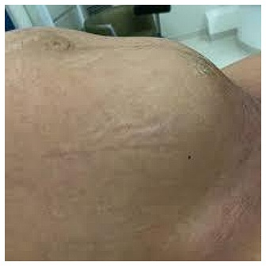
A Sondagem vesical.
B Ocitocina endovenosa.
C Complementar analgesia.
D Cesárea imediata.
Questão 22 · Avaliação da vitalidade f etal · 4000165647Gestante de 17 anos de idade, com 40 semanas e 3 dias de gestação comparece assintomática para controle de vitalidade. Ao exame clínico: PA 110x75 mmHg, FC 78 bpm, altura uterina 36 cm, toque com colo amolecido, grosso, posterior, pérvio para 2 cm, apresentação cefálica no plano -2 de DeLee. Na avaliação ultrassonográ ca, feto com tônus preservado, índice de líquido amniótico de 4.6 cm, movimentos fetais e respiratórios presentes. Cardiotocografia apresentada. Qual é a conduta obstétrica?
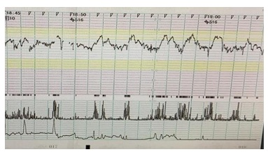
A Indução do parto com ocitocina.
B Reavaliação de vitalidade fetal em 48 horas.
C Parto cesáreo segmentar transversa.
D Maturação do colo uterino com prostaglandina.
Revisar: possível letra faltando em enunciado
Questão 23 · Avaliação da vitalidade f etal · Obstetrícia · 4000165127Com relação ao perfil biofísico fetal como método de avaliação da vitalidade fetal, assinale a correta. I. Para sua execução são necessários o uso da cardiotocografia e do ultrassom. II. Os marcadores agudos deste exame são a frequência cardíaca fetal, movimentos respiratórios fetais, movimentos corporais fetais e tônus fetal. III. O marcador crônico deste exame é o líquido amniótico.
A As afirmativas I e II são verdadeiras. A afirmativa III é falsa.
B As afirmativas I e III são verdadeiras. A afirmativa II é falsa.
C As afirmativas II e III são verdadeiras. A afirmativa I é falsa.
D As afirmativas I, II e III são verdadeiras.
E As afirmativas I, II e III são falsas.
Questão 24 · Avaliação da vitalidade f etal · Obstetrícia · 4000164517Segundo o Colégio Americano de Obstetras e Ginecologistas, a monitorização fetal abaixo é classificada como categoria:
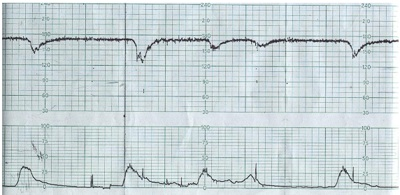
A 1.
B 2.
C 3.
D 4.
Questão 25 · Conduta · Interpretação · 4000185170Parturiente, G3 P2 (partos vaginais), 39 semanas de gestac fortes, de 40 segundos de durac i ́ ntegra, OEA e plano +3 de De Lee. Realizada cardiotocogra a, foi constatado o trac A melhor conduta a ser adotada nesse momento e

A Indicar a interrupc
B Estimular os puxos maternos para abreviac
C Amniotomia e amnioinfusa
D Posicionar em decu
Questão 26 · Conduta · Interpretação · Indicações · 4000185169Primigesta, 28 anos de idade, 30 semanas de gestac de cardiotocografia conforme apresentado na imagem. Nesse caso, a denominac melhor cuidado da gestante, respectivamente, sa
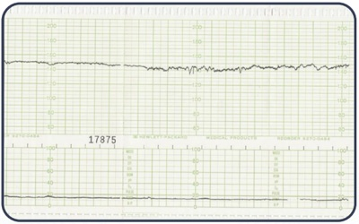
A Hiporeativo; interromper a gestac
B Na
C Na
D Inativo; realizar cardiotocografia computadorizada.
Questão 27 · Ducto venoso DV · 4000152021O estudo Dopplerfluxométrico do sonograma do ducto venoso:
A identifica a vasoconstrição periférica, que leva à diminuição da pressão nas câmaras cardíacas, seguida de alterações no território venoso fetal.
B tem sido eleito pela maioria dos estudos para representar o território venoso fetal.
C visualiza o shunt vascular que comunica a porção intra-hepática da veia umbilical com a veia cava inferior e daí para o átrio esquerdo, levando sangue oxigenado para o forame magno.
D é caracterizado por baixa velocidade durante a sístole ventricular (onda-S) e a diástole (onda-D), determinando um padrão sonográfico bifásico característico.
E é caracterizado por grande aumento da velocidade na contração atrial (onda-A), determinando um padrão sonográfico monofásico característico.
Questão 28 · Cardiotocograf ia CTB · 4000151640Tercigesta, 32 anos, dois partos normais anteriores, fazia pré-natal em Unidade de Alto Risco devido hipertensão arterial. Está internada em trabalho de parto, 5 cm de dilatação. 3 contrações em 10 minutos de observação e apresentação cefálica. O exame cardiotocográfico abaixo foi realizado agora. De acordo com esses dados, a conduta é:

A Cesariana de emergência:
B Parto via vaginal instrumentalizado.
C Amniotomia e oxigenação materna.
D Reposicionamento materno - decúbito lateral esquerdo materno.
Questão 29 · Conduta · Artéria umbilical · Obstetrícia · 4000147570Gestante de 32 semanas com hipertensão arterial crônica e restrição de crescimento fetal. Apresenta dopplervelocimetria obstétrica da artéria umbilical conforme a imagem em anexo. Qual é a conduta?
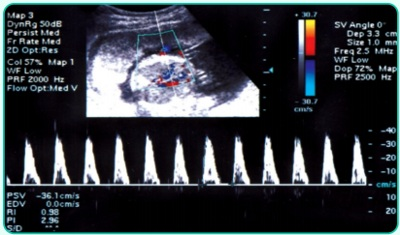
A Resolução imediata da gestação.
B Avaliação diária do ducto venoso.
C Avaliação diária da artéria uterina.
D Seguimento no pré-natal de rotina.
E Repetir dopplervelocimetria em uma semana.
Questão 30 · Conduta · Interpretação · Obstetrícia · 4000147569Gestante de 38 semanas, com hipertensão arterial crônica em uso de aspirina, cálcio e metildopa, chega à maternidade devido a contrações uterinas e diminuição da movimentação fetal. Nega outras queixas. Ao exame constata-se PA 150/100 mmHg, edema 3+/4 de membros inferiores, AU 32 cm, BCF 145 bpm, TV colo grosso e impérvio, dinâmica uterina de duas contrações em 10 min. Foi realizada cardiotocografia, com imagem em anexo. Qual é a classificação da cardiotocografia e qual é a conduta?
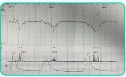
A Categoria 2, resolução imediata da gestação.
B Categoria 3, resolução da gestação se as medidas de ressuscitação intrauterina não forem efetivas.
C Categoria 1, solicitar dopplervelocimetria obstétrica; se normal, liberar a gestante.
D Categoria 2, medidas de ressuscitação intrauterina e resolução da gestação se as medidas não forem efetivas para melhorar os parâmetros fetais.
E Categoria 3, solicitar dopplervelocimetria obstétrica para avaliar o ducto venoso.
Questão 31 · Cardiotocograf ia CTB · Obstetrícia · Avaliação da vitalidade f etal intraparto · 4000146769Mulher de 28 anos, com 38 semanas de idade gestacional interna em trabalho de parto. Cardiotocogra a (CTG) mostrando padrão sinusoide. Ao exame: PA 120x80 mmHg, frequência cardíaca materna 88 bpm, tônus uterino normal, 3 contrações em 10 minutos com 40 segundos de duração (3/10'/40""), feto único, longitudinal, cefálico com dorso a esquerda, batimentos cardíacos fetais (BCF) 110bpm. Colo 6 cm dilatado, 70% apagado, bolsa íntegra. Após manobras de ressuscitação intrauterina, CTG manteve padrão sinusoide. Qual melhor conduta?
A Iniciar ocitocina.
B Realizar amniotomia.
C Realizar amnioscopia.
D Cesariana.
E Analgesia de parto.
Questão 32 · Interpretação · Obstetrícia · 4000146278Em exame de cardiotocogra a demonstrando traçado de ondas em formato de sino, monótonas, com ritmo xo e regular, tem o nome de
A Acelerações transitórias.
B Desacelerações.
C Padrão sinusoidal.
D DIP II.
Questão 33 · Cardiotocograf ia CTB · Obstetrícia · 4000146201Na avaliação de vitalidade fetal intraparto, assinale a INCORRETA:
A As desacelerações precoces, em geral, são consideradas benignas e sem consequências para o feto, pois não estão associadas com acidemia.
B Nas desacelerações tardias, o nadir ocorre após o pico da contração uterina, em resposta à diminuição do fluxo sanguíneo uterino para o feto.
C No traçado anormal de cardiotografia categoria III, reflete aumento do risco de acidose fetal.
D Acelerações transitórias da frequência cardíaca é sinal de acidemia fetal, devendo o parto ser realizado o mais breve possível.
Questão 34 · Dopplervelocimetria Doppler · Obstetrícia · 4000145824A insuficiência placentária pode levar a um quadro de alterações circulatórias que se caracterizam pela tendência a:
A elevação da resistência nas artérias umbilicais e cerebral média
B diminuição da resistência nas artérias umbilicais e cerebral média
C elevação da resistência nas artérias umbilicais e diminuição da resistência na artéria cerebral média
D diminuição da resistência nas artérias umbilicais e aumento da resistência na artéria cerebral média
Questão 35 · Cardiotocograf ia intraparto · Obstetrícia · 4000144280Multigesta (G4P2A 1), 37 anos, interna na fase ativa do trabalho de parto espontâneo, com 37,5 semanas. Exame físico geral normal, altura uterina 37 cm. A evolução do trabalho de parto, até às 20h, está demonstrada no partograma (Figura 1). Nesse momento, a equipe decidiu por monitorizar o feto continuamente devido à ausculta de desacelerações de sua frequência cardíaca (Figura 2). Qual alternativa tem diagnósticos nesse cenário clínico?
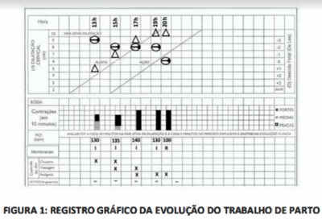
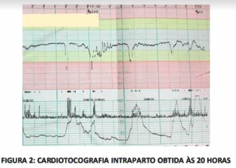
A Período expulsivo prolongado com asfixia fetal.
B Trabalho de parto eutócico com suspeita de sofrimento fetal.
C Distocia funcional com vitalidade fetal esperada para expulsivo.
D Evolução normal do trabalho de parto com boa vitalidade fetal.
Questão 36 · Avaliação da vitalidade f etal · Obstetrícia · 4000144261Primigesta, 18 anos, com 34 semanas de gestação, retorna em consulta pré-natal, em Unidade Básica de Saúde, com resultado de ultrassonogra a obstétrica realizada há 3 dias. É tabagista e tem índice de massa corporal no primeiro trimestre de 17 kg/m² • Está assintomática, com exames da rotina laboratorial normais. A ultrassonogra a mostrou peso fetal estimado no percentíl 12, índice de pulsatilidade (IP) na artéria umbilical no percentíl 91 e IP na artéria cerebral média no percentil 15, maior bolsão de líquido amniótico no percentil 25. Na consulta de hoje não foram percebidos movimentos fetais. O exame físico geral e restante do exame obstétrico são normais. Qual é a conduta imediata mais adequada neste momento?
A Auscultar o feto após estímulo mecânico ou vibroacústico.
B Solicitar nova ultrassonografia obstétrica com Doppler em uma semana.
C Encaminhar a paciente ao serviço de referência de urgência.
D Agendar avaliação dessa gestante em pré-natal de alto risco.
Questão 37 · Cardiotocograf ia intraparto · Obstetrícia · 4000143342A ocorrência de DIP I (precoce) observada na cardiotocografia intraparto indica
A esposta fisiológica à hiperventilação materna durante a contração uterina.
B resposta siológica fetal à redução do uxo nas arte
C reflexo vagal por compressão do polo cefálico durante a contração uterina.
D relação com a asfixia fetal por insuficiência uteroplacentária aguda.
E centralização fetal.
Questão 38 · Dopplervelocimetria Doppler · Obstetrícia · 4000143339A centralização fetal, que ocorre em determinados casos de gestação de alto risco, pode ser identificada através do exame denominado
A cardiotocografia.
B ecocardiografia fetal.
C ecografia morfológica fetal.
D dopplervelocimetria fetal.
E ultrassonografia transvaginal.
Questão 39 · Cardiotocograf ia anteparto · Obstetrícia · 4000143334Paciente de 15 anos, G2P0A1, atualmente com 37 semanas de gestação, em seguimento em pré-natal de alto risco devido à síndrome hipertensiva gestacional. Realizou ultrassonogra a obstétrica com doppler, evidenciando oligoâmnio e restrição de crescimento intrauterino. Indicada resolução da gestação, sendo encaminhada à maternidade para indução do parto, após cardiotocografia para avaliar a vitalidade fetal, conforme imagem a seguir. O traçado ao lado é classificado como
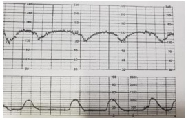
A inconclusivo.
B categoria I.
C categoria II.
D categoria III.
E categoria IV.
Questão 40 · Obstetrícia · Perf il biof isico f etal PBF · 4000143333O per l biofísico fetal é um exame solicitado para avaliar a vitalidade fetal muito utilizado para pacientes portadoras de diabetes gestacional ou com gestação múltipla. Sobre o perfil biofísico fetal, considere as afirmativas seguintes. I. É um exame capaz de detectar sofrimento fetal agudo. II. Deve ser feito observando os parâmetros por, pelo menos, 30 minutos. III. O primeiro parâmetro a se alterar são os movimentos corporais. IV. O líquido amniótico é um marcador agudo de sofrimento fetal. V. Diante de resultados abaixo ou iguais a 4, deve-se realizar o parto imediatamente. Estão corretas
A I, II e V, somente.
B I, II, III e V, somente.
C I, III, IV e V, somente.
D II e IV, somente.
E II, III e IV, somente.
Questão 41 · Avaliação da vitalidade f etal · Obstetrícia · 4000143194Sobre Vitalidade fetal, marque a alternativa
A O sonograma da arterial umbilical representa a circulação coronariana fetal.
B A presença da incisura protodiastólica após de 26 semanas de gestação prediz bem-estar fetal.
C O perfil biofísico fetal, com o objetivo de avaliar o bem-estar fetal, é realizado pela ultrassonografia durante um período de 30 minutos utilizando quatro parâmetros mais a cardiotocografia, são eles: líquido amniótico, tônus, movimentos fetal ativos e circulação fetal.
D A artéria cerebral média é o vaso mais estudado no feto e quando alterado, relaciona-se com resultados perinatais adversos.
E A Cardiotocografia normal (reativo) inclui uma aceleração a cada 20 minutos de traçado, com amplitude maior ou igual a 10 bpm e duração acima de 15 segundos.
Questão 42 · Artéria umbilical · 4000142510Em relação à hemodinâmica fetal, assinale a opção correta.
A O ducto arterioso é o primeiro shunt da circulação fetal.
B A irrigação de membros superiores, crânio e coração é feita pelo lado direito do coração fetal.
C O último parâmetro de avaliação Doppler a se alterar em um quadro de hipoxia fetal é a artéria cerebral média.
D As artérias umbilicais são ramos terminais das ilíacas internas.
E O forame oval é uma veia de pequeno calibre que desvia o sangue para o ventrículo direito.
Questão 43 · Cardiotocograf ia intraparto · Obstetrícia · 4000142505Parturiente de 39 semanas e 4 dias, primigesta, chega ao pronto-socorro com queixa de dor em baixo ventre. Nega patologias obstétricas ou clínicas. Ao exame físico, apresenta-se corada e hidratada, PA: 120 x 80mmHg, FC 80bpm. Altura uterina: 34cm, dinâmica uterina: 3 contrações fortes em 10 minutos; ao toque vaginal, colo com dilatação de 4cm, médio, -1 De Lee. Observe a cadiotocografia apresentada a seguir. Baseando-se na cadiotocografia, qual é a classificação do traçado e a conduta correta?
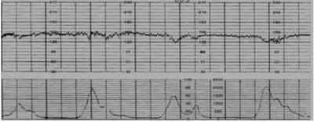
A Categoria III, esforços imediatos para reverter o padrão ou resolução parto.
B Categoria 0, sem conduta específica, controle habitual do trabalho de parto.
C Categoria II, oxigenioterapia e cardiotocografia contínua.
D Categoria I, aguardar resolução parto.
E Categoria II, aguardar a resolução do parto.
Questão 44 · Conduta · Obstetrícia · 4000142502G1P0, 40 semanas, comparece em consulta de rotina do pré-natal, sem queixas. Ao exame físico, dinâmica uterina ausente, colo grosso, posterior, fechado. Cardiotocogra a mostrando feto hipoativo e hiporreativo. Ultrassonogra a mostra: apresentação cefálica, índice de líquido amniótico de 4,0 cm, maior bolsão vertical de 3,0 cm, per l biofísico fetal: 8 em 8. Qual é a melhor conduta?
A Repetir cardiotocografia em uma semana.
B Indução do trabalho de parto com ocitocina.
C Internação para cesárea.
D Indução do trabalho de parto com prostaglandina vaginal.
E Aguardar trabalho de parto espontâneo até 42 semanas.
Questão 45 · Artéria cerebral média ACM · Obstetrícia · 4000142015O fenômeno de centralização fetal diagnosticado pelo Doppler obstétrico representa:
A Artéria Umbilical com fluxo de baixa resistência e ducto venoso com onda A positiva.
B Artéria cerebral média com fluxo de alta resistência e Ducto venoso com onda A negativa.
C Artéria cerebral média com fluxo de baixa resistência, artéria umbilical com fluxo de alta resistência.
D Artéria cerebral média com fluxo de baixa resistência, artéria umbilical com fluxo de baixa resistência.
Questão 46 · Cardiotocograf ia CTB · 4000141373Os métodos de avaliação da vitalidade fetal buscam avaliar o bem-estar do feto e, por conseguinte, evitar uma morte perinatal. Dentre tais métodos, se encontra o teste de contração com estresse, o qual pode revelar se o bebê tem uma frequência cardíaca anormal durante as contrações. Quanto ao teste de contração com estresse, é CORRETO afirmar:
A É utilizado um cardiotocógrafo para registrar a frequência cardíaca fetal e a atividade uterina.
B É “negativo” quando não ocorrem acelerações tardias.
C É o mais trabalhoso dentre os métodos, além de possuir menor precisão para detectar um feto comprometido.
D As contrações são induzidas por meio de estimulação mamilar da gestante.
Questão 47 · Ducto venoso DV · Obstetrícia · 4000141027O estudo dopplerfluxométrico do sonograma do ducto venoso
A identifica a vasoconstrição periférica, que leva à diminuição da pressão nas câmaras cardíacas, seguida de alterações no território venoso fetal.
B tem sido eleito pela maioria dos estudos para representar o território venoso fetal.
C visualiza o
D é caracterizado por baixa velocidade durante a sístole ventricular (onda-S) e a diástole (onda-D), determinando um padrão sonográfico bifásico característico.
E é caracterizado por grande aumento da velocidade na contração atrial (onda-A), determinando um padrão sonográfico monofásico característico.
Questão 48 · Conduta · Conduta · Obstetrícia · 4000140854Gestante de 43 anos de idade, casada, está em consulta pré-natal após submeter-se a reprodução assistida. É primigesta e tem 33 semanas de gestação. Na avaliação clínica, está em bom estado geral, corada, PA 120 x 75mmHg, FC 78 bpm, IMC 21,4 kg/m². A altura uterina é de 31 cm. O BCF está presente e é rítmico. Tônus normal. Traz ultrassonogra a obstétrica mostrando feto único, cefálico, com dorso à esquerda e placenta posterior. Índice de líquido amniótico 9 cm e peso estimado 1685g (percentil 5). Na mesma consulta foi realizada a seguinte avaliação de vitalidade fetal: Valores de referência: A umb PI: 030 a 1,40 A umb S/D: 1,24 a 3,40 A orientação a ser dada à paciente quanto à resolução da gravidez é:


A Indicar parto com 34 semanas de gestação.
B Programar parto no termo precoce.
C Aguardar termo tardio.
D Aguardar até 40 semanas de gestação.
Questão 49 · Parto vaginal operatório · Partograma · Avaliação da vitalidade f etal intraparto · 4000140850Primigesta de 21 anos de idade, está com 38 semanas de gestação e iniciou trabalho de parto espontâneo. O partograma e a cardiotocografia estão apresentados a seguir. Qual é o método indicado para ultimação do parto?

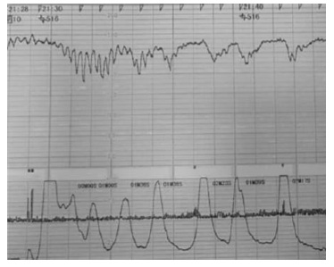
A Abreviação com vácuo extrator.
B Cesárea segmentar transversa.
C Aguardar parto espontâneo.
D Rotação com fórcipe Kielland.
Questão 50 · Cardiotocograf ia intraparto · Obstetrícia · 4000140849Primigesta de 21 anos de idade, está com 38 semanas de gestação e iniciou trabalho de parto espontâneo. O partograma e a cardiotocografia estão apresentados a seguir. A fisiopatologia do traçado da cardiotocografia apresentado inclui:
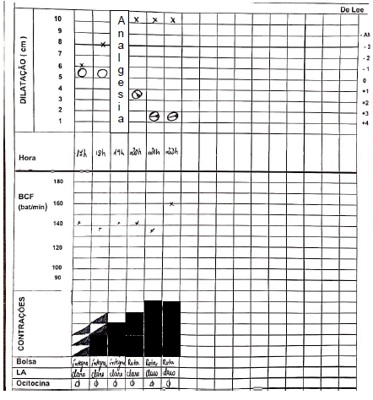

A Compressão funicular.
B Compressão do pólo cefálico.
C Bloqueio átrio ventricular fetal.
D Acidemia fetal
Questão 51 · Cardiotocograf ia CTB · Obstetrícia · 4000140488É um dos critérios de cardiotocografia com resultado de feto ativo e reativo:
A frequência cardíaca fetal máxima de 160 batimentos por minuto após estímulo sonoro.
B variabilidade entre 5 a 10 batimentos por minuto antes do estímulo.
C linha de base entre 100 e 200 batimentos por minuto antes do estímulo.
D presença de acelerações transitórias após movimentação ou estímulo sonoro.
E presença de no máximo uma desaceleração não relacionada ao estímulo sonoro.
Questão 52 · Artéria umbilical · Obstetrícia · 4000137467No acompanhamento do crescimento intrauterino restrito placentário precoce, realizou-se um Doppler de artéria umbilical com 23 semanas. Pode-se afirmar, correlacionando o resultado encontrado no exame e a conduta futura, que:
A com diástole zero, repetir em 2 semanas e parto entre 30-32 semanas.
B com
C com diástole reduzida, repetir o
D com diástole reversa, realizar
Questão 53 · Cardiotocograf ia intraparto · Obstetrícia · 4000137463Gestante, 39 semanas e 2 dias está em monitorização contínua com cardiotocogra as intraparto. Durante o trabalho de parto, ocorreram desacelerações que tiveram seu início, máximo de queda e recuperação à linha de base coincidindo, respectivamente, com o começo, pico e fim da contração, sendo que a frequência cardíaca fetal basal associada situava-se nos limites da normalidade. Esse tipo de desacelerações pode ser classificado como:
A tardio.
B cefálico.
C umbilical.
D placentário.
Questão 54 · Dopplervelocimetria Doppler · Obstetrícia · 4000133748Primigesta de 22 anos inicia pré-natal (PN) com 14 semanas. Está assintomática, altura do fundo uterino (AFU) = 13cm, batimentos cardíacos fetais (BCF) = 160bpm, colo longo, posterior e fechado, PA = 110 x 70mmHg, rotina PN sem alterações. Até a 29ª semana, a gestação evolui sem intercorrências clínicas ou laboratoriais. Na consulta com 33 semanas, apresenta AFU = 25cm, BCF = 155bpm, PA = 165 x 115mmHg, com queixa de cefaleia esporádica. Os exames realizados na 32ª semana revelaram: Ht = 36; Hg = 11,5; U = 42; C = 1,0; Ptn 24h = 4.500mg. A médica solicita USG, cujo laudo indica oligodramnia e feto com peso abaixo do percentil 3, informando também haver centralização fetal. Diante desse laudo, é correto a rmar que os achados encontrados na doppler uxometria em relação à resistência das artérias umbilical e cerebral média, respectivamente, serão:
A diminuída / diminuída
B diminuída / aumentada
C aumentada / diminuída
D aumentada / aumentada
Questão 55 · Parâmetros da cardiotocograf ia · Obstetrícia · 4000131338Leia o caso clínico a seguir. Paciente G1 P0 A0, idade gestacional de 36 semanas, com diagnóstico de pré-eclâmpsia em uso de anti-hipertensivo. Comparece à maternidade por sentir que o seu bebê está se movimentando menos, sem outras queixas. Pressão arterial 130x80mmHg no momento da consulta. Ausência de contrações e colo uterino fechado. Ao realizar cardiotocogra a, poder-se-à tranquilizar a paciente se os achados em traçado de 20 minutos forem linha de base com:
A 125 batimentos por minuto, variabilidade de 15 batimentos por minuto e três aumentos da frequência cardíaca fetal de 15 batimentos cardíacos por minuto com duração de 15 segundos.
B 130 batimentos por minuto, variabilidade de quatro batimentos por minuto e um aumento da frequência cardíaca fetal de 15 batimentos cardíacos por minuto com duração de 15 segundos.
C 100 batimentos por minuto, variabilidade de dez batimentos por minuto e dois aumentos da frequência cardíaca fetal de 20 batimentos cardíacos por minuto com duração de 15 segundos.
D 170 batimentos por minuto, variabilidade de 20 batimentos por minuto e três aumentos da frequência cardíaca fetal de dez batimentos cardíacos por minuto com duração de dez segundos.
Questão 56 · Artéria cerebral média ACM · Vasos estudados · Obstetrícia · 4000131337O doppler de artéria cerebral média fetal apresentando índice de pulsatilidade (IP) baixo, sugerindo vasodilatação cerebral, indica que:
A há deslocamento do fluxo sanguíneo para o cérebro, e o achado se correlaciona com bons resultados em termos de bem-estar fetal durante o parto.
B não está havendo deslocamento do fluxo sanguíneo para o cérebro, e o achado se correlaciona com perda do bem-estar fetal durante o parto.
C não está havendo necessidade de deslocamento do fluxo sanguíneo para o cérebro, e o achado se correlaciona com bons resultados em termos de bemestar fetal durante o parto.
D há deslocamento do fluxo sanguíneo para o cérebro, e o achado se correlaciona com perda do bem-estar fetal durante o parto.
Questão 57 · Obstetrícia · Perf il biof isico f etal PBF · 4000129799Gestante de 35 semanas, acompanhada no ambulatório de pré-natal de alto risco por diabetes gestacional, apresenta exame de ultrassonogra a com duração de 30 minutos, demonstrando feto único, apresentação cefálica, índice de líquido amniótico de 32 cm (maior bolsão vertical em 7,8 cm), peso estimado fetal no percentil 96, quatro movimentos fetais, um episódio de movimentos respiratórios rítmicos e um episódio de extensão e flexão das pernas. Exame de cardiotocografia conforme a figura. Assinale a alternativa que contém o valor correto do perfil biofísico fetal clássico (Manning, 1980).

A 06
B 07
C 08
D 09
E 10
Questão 58 · Dopplervelocimetria Doppler · Obstetrícia · 4000129647A síndrome hipercinética consiste em alterações fetais que podem ser identi cadas no doppler da artéria cerebral média fetal, encontrada nos casos de
A pré-eclâmpsia grave.
B síndrome HELLP.
C anemia fetal.
D cardiopatias congênitas.
Questão 59 · Medicina f etal · Avaliação da vitalidade f etal · Cardiotocograf ia CTB · 4000129577Gestante de 35 anos, G3P2vA0, idade gestacional de 38 semanas, comparece à maternidade referindo dores tipo contração e perda de líquido transvaginal. Teve diagnóstico de diabetes gestacional desde a terceira consulta de pré-natal e controlou com dieta. Ao exame: pressão arterial de 140x90mmHg, presença de contrações rítmicas, dilatação do colo uterino de 5cm, bolsa rota com líquido amniótico claro. Exame cardiotocográfico mostrou o seguinte traçado: Qual o tipo de desaceleração apresentada (DIP) e em qual categoria de cardiotocogra a intraparto esse traçado se enquadra?
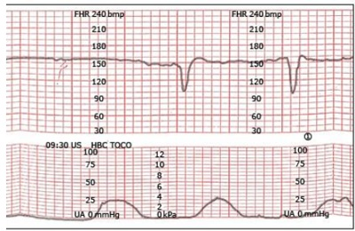
A DIP 2; categoria 2.
B DIP 2; categoria 3.
C DIP 3; categoria 2.
D DIP 3; categoria 3.
Questão 60 · Predição e prevenção · Artéria uterina · Obstetrícia · 4000137275Gestante veio realizar ultrassonogra a morfológica do primeiro trimestre e apresentou Dopplervelocimetria conforme a figura abaixo. Sobre que vaso é essa Dopplervelocimetria e o que indica essa alteração?
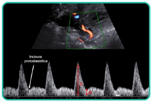
A Artéria umbilical. Sofrimento fetal
B Artéria cerebral média. Anemia fetal
C Artéria uterina. Risco aumentado para pré-eclâmpsia
D Artéria umbilical. Risco aumentado para restrição de crescimento fetal.
E Artéria uterina. Sofrimento fetal
Questão 61 · Criterios diagnósticos da préeclampsia · Conduta obstétrica · Préeclâmpsia com sinais de gravidade · 4000130385Adolescente, 15a, G1P0C0A0, comparece à consulta pré-natal, com idade gestacional 35 semanas, queixa-se de dor em hipocôndrio direito, náuseas e ganho de 1 kg em 1 semana. Exame físico: PA= 130x90 mmHg, Exame ginecológico: altura uterina de 32 cm, batimentos cardíacos fetais= 130 bpm. A CONDUTA É:
A Internação para cesárea de emergência.
B Internação, exames e avaliação de vitalidade fetal.
C Retorno em 7 dias com exames e avaliação vitalidade fetal.
D Orientar dieta, repouso, controle de pressão e retorno em pré-natal em 7 dias.
Questão 62 · Morte f etal óbito f etal OF · Etiologia e f isiopatologia · Indicações · 4000130373Mulher, 42a, G3P2C2A0, idade gestacional 35 semanas comparece ao Pronto Socorro com queixa de redução de movimentos fetais. Refere múltiplos episódios de hipoglicemia embora mantenha padrão alimentar e a mesma dose de insulina. Antecedentes pessoais:diabetes e hipertensão gestacionais em uso de insulina NPH 30 unidades ao dia e metildopa 750mg/dia. Exame físico: PA= 110x80 mmHg. Fita urinária: proteína: negativa. ESSA INTERCORRÊNCIA PODE SER EXPLICADA POR:
A Desenvolvimento fisiológico da gestação.
B Pré-eclampsia sobreposta.
C Insuficiência placentária.
D Malformação fetal.
Questão 63 · Primeiro periodo dilatação · Métodos de avaliação da vitalidade f etal · 4000130363Avaliação da vitalidade f etal intraparto Mulher, 25a, G2P1C0A0, idade gestacional de 41 semanas. Trabalho de parto induzido com ocitocina, queixando-se de muita dor. Toque vaginal: colo com 8 cm de dilatação, cefálico, plano -1 de De Lee, bolsa rota espontânea líquido claro com grumos grossos. Cardiotocografia: A CONDUTA NO MOMENTO É:
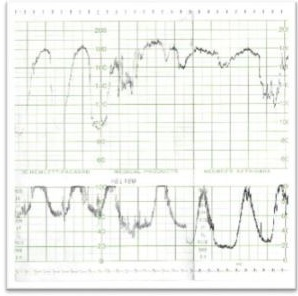
A Suspender ocitocina, analgesia e monitorização continua dos batimentos cardio fetais.
B Hidratação e cesárea de urgência sob raquianestesia.
C Manter ocitocina e parto fórceps Simpson com bloqueio pudendo bilateral.
D Aumentar ocitocina, analgesia e monitorização intermitente dos batimentos cardio fetais.
Questão 64 · Obstetrícia · Variáveis · 4000127693Multípara, 38 anos de idade, hipertensa crônica e tabagista. A gestação, de alto risco, evolui com restrição de crescimento intrauterino. Atualmente, encontra-se na 34ª semana de gestação e é solicitada a realização de per l biofísico fetal. Este exame é composto por 4 marcadores agudos e 1 crônico. O marcador crônico de sofrimento fetal por este método é representado por:
A Tônus fetal
B Volume de líquido amniótico
C Movimento corpóreo fetal
D Frequência cardíaca fetal
Questão 65 · Conduta · Interpretação · 4000120210Gestante de 37 semanas refere diminuição da movimentação fetal há um dia. O exame físico geral não mostra alterações e o exame obstétrico é compatível com a idade gestacional. Realiza-se cardiotocogra a, em que a paciente registra 4 episódios de movimentação fetal, como mostrado na imagem abaixo. É correto afirmar que essa cardiotocografia

A é suspeita para início de hipóxia fetal, devendo-se induzir o parto.
B tem padrão tranquilizador e a paciente pode observar a movimentação fetal em casa.
C mostra início de trabalho de parto, devendo-se internar a paciente para monitoração do bem-estar fetal.
D mostra desacelerações tardias, sendo indicada resolução do parto nesse momento.
E mostra desacelerações variáveis, sendo indicada cesárea.
Questão 66 · Perf il biof isico f etal PBF · 4000114941Para a interpretação do exame propedêutico Perfil Biofísico Fetal (PBF), deve-se considerar que
A nas gestações em que ocorreu placentação normal e invasão trofoblástica adequada, oleito das artérias uteroplacentárias funciona como um sistema de alta resistência, alta pressão e baixo fluxo.
B diante de uma injúria placentária e da hipoxemia crônica, pode ocorrer priorização dacirculação fetal para órgãos nobres, diminuição da perfusão sanguínea renal e pulmonar com consequente diminuição do líquido amniótico (LA).
C os principais parâmetros agudos avaliados no exame são os movimentos respiratóriosfetais, o líquido amniótico e o tônus fetal.
D na presença de insuficiência placentária decorrente de placentação inadequada,devido à segunda onda de invasão trofoblástica ausente ou incompleta, estabelece-se um regime de baixa resistência e fluxo elevado.
E de acordo com a ""Teoria da Hipóxia Gradual"", a sequência de anormalidades dasatividades biofísicas fetais relacionadas à hipóxia acontece na mesma ordem de aparecimento observada durante o período embrionário sendo, portanto, a frequência cardíaca fetal o último parâmetro a sofrer alterações.
Questão 67 · Cardiotocograf ia intraparto · Primeiro periodo dilatação · 4000113900Primigesta, 22 anos, com 41 semanas, internou no início da fase ativa da dilatação com contrações moderadas e perda de tampão mucoso. Sem outras queixas. Pré-natal sem intercorrências. Há 30 minutos, queixou-se de muita dor e solicitou analgesia farmacológica. Foi submetida à bloqueio combinado raqui-peridural. Reavaliação após analgesia: sinais vitais maternos normais, atividade uterina de 4 contrações moderadas de 40 segundos em 10 minutos. A avaliação da vitalidade fetal está demonstrada na cardiotocogra a exibida abaixo ( figura). Toque: colo no, centrado, dilatado 8 cm, feto cefálico, em zero de DeLee, bolsa íntegra. Escolha a melhor conduta na assistência a este trabalho de parto.

A Realizar ausculta intermitente da frequência cardíaca fetal.
B Promover corioamniorrexe artificial.
C Indicar resolução da gestação por cesárea.
D Instituir manobras de reanimação fetal.
Questão 68 · Conduta · Interpretação · 4000109268Gestante, 32 anos de idade, secundigesta com uma cesárea anterior, 40 semanas e 2 dias de gravidez. Refere contrações irregulares e redução de movimentação fetal há 1 dia. Ao exame clínico, bom estado geral, corada, PA 120x70mmHg, altura uterina 30 cm, BCF presente rítmico. Toque vaginal com colo grosso, posterior, impérvio. Vitalidade fetal: tônus adequado, movimentação corpórea e respiratória presentes, índice de líquido amniótico de 4,2 cm. Cardiotocografia apresentada. Qual é a conduta adequada neste momento?

A Controlar a vitalidade fetal em 2 dias.
B Preparar o colo com prostaglandina.
C Indicar parto de imediato por via alta.
D Realizar hidratação materna e reavaliação.
Questão 69 · Interpretação · 4000108282Considere o traçado da cardiotocografia abaixo. De acordo com o traçado, é correto inferir que há
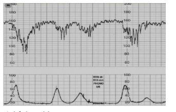
A resposta vagal do feto à hipóxia pela diminuição do fluxo interviloso decorrente dacontração uterina.
B taquicardia fetal reativa à hipóxia causada pela contração uterina.
C ausência de acelerações transitórias por hipóxia fetal grave durante o trabalho departo.
D bradicardia fetal por compressão do polo cefálico durante a contração uterina.
E bradicardia fetal por compressão localizada do cordão umbilical durante a contração uterina.
Questão 70 · Vasos estudados · Diagnóstico · Etiologia · 4000086055Em relação ao crescimento intrauterino restrito (CIUR), a rma-se: I. Há associação entre o CIUR e fatores de riscos cardiovasculares na vida adulta, como hipertensão arterial, dislipidemia e resistência à insulina. II. As principais causas do CIUR assimétrico são genéticas, infecções congênitas e uso de drogas, e a principal causa do tipo simétrico é a insuficiência placentária. III. Devido à placentação inadequada, eleva-se a resistência de perfusão e, consequentemente, o uxo diastólico diminui à dopplervelocimetria das artérias umbilicais e precocemente ocorre alteração do ducto venoso fetal. Está/Estão correta(s) apenas a(s) afirmativa(s)
A I.
B III.
C I e II.
D II e III.
Questão 71 · Indicações · Bases f ísicas da Dopplervelocimentria · Prognóstico · 4000050607A restrição de crescimento fetal (RCF) representa hoje uma patologia de relevância na prática clínica do obstetra. Sabe-se que atualmente o diagnóstico acurado, tal como o manejo criterioso desses fetos, é imprescindível para o desfecho perinatal adequado. Com relação à RCF, assinale a alternativa INCORRETA.
A A mortalidade do feto com restrição de crescimento é cerca de oito vezes maior quando comparada ao feto com peso adequado para a idade gestacional.
B O recém-nascido acometido pela RCF tem maior risco de insuficiência respiratória, hipoglicemia, hipocalemia, hipotermia e prejuízo no desenvolvimento neuropsicomotor.
C O estudo Doppler é um método que auxilia na distinção do feto pequeno para a idade gestacional constitucional daquele feto pequeno por insuficiência placentária.
D Estudos recentes indicam que o risco de resultado perinatal adverso em casos de RCF tardia pode ser melhor avaliado pelo Doppler cerebral, visto que o Doppler da artéria umbilical pode não se modificar.
E Em casos de insuficiência placentária prolongada, evoluindo com vasoconstrição periférica fetal intensa, observa- se a deterioração da função cardíaca que pode ser avaliada pelo Doppler do ducto arterioso.
Questão 72 · Artéria uterina · Indicações · Diagnóstico · 4000042673O exame ultrassonográ co de eleição para avaliar insu ciência placentária em casos com restrição de crescimento intra- uterino é:
A Medida do volume de líquido amniótico.
B Doppler de artérias uterinas.
C Doppler de artéria cerebral média.
D Doppler de artéria umbilical.
Revisar: possível letra faltando em enunciado
Questão 73 · Artéria cerebral média ACM · Sequência anemiapolicitemia · 4000038444Na síndrome anemia-policitemia em gestação dupla, o método propedêutico a ser usado para estudo fetal é
A a diferença de peso entre os fetos acima de 20%.
B a presença de polihidrâmnio em 1 feto e oligoâmnio no outro.
C o estudo dopplervelocimétrico da artéria cerebral média de ambos os fetos.
D a restrição de crescimento secundária de um dos fetos.
E a presença de desacelerações variáveis à cardiotocografia em um dos fetos.
Questão 74 · Métodos de avaliação da vitalidade f etal · Cardiotocograf ia CTB · Obstetrícia · 4000036147Considerando a avaliação do bem-estar fetal, é correto afirmar:
A Na avaliação do perfil biofísico fetal, é possível a presença de oligo-hidrâmnio, pela avaliação do índice de líquido amniótico, porém com nota máxima (nota 2) para essa variável (líquido amniótico).
B Durante a cardiotocografia, os valores considerados normais para a frequência cardíaca fetal são de 120 a 160 batimentos por minuto (bpm).
C Em uma gravidez a termo, é considerada aceleração transitória um aumento da frequência cardíaca fetal de pelo menos dez batimentos com duração de pelo menos dez segundos.
D A desaceleração intraparto tardia ou DIP II está relacionada à compressão do polo cefálico fetal, determinando reflexo vagal com consequente diminuição da frequência cardíaca fetal.
Questão 75 · Parâmetros da cardiotocograf ia · 4000032921Durante o trabalho de parto espontâneo de uma gestação com 40 semanas e dois dias e complicada por hipotiroidismo materno, o traçado cardiotocográ co foi obtido e está apresentado a seguir. Interprete o registro gráfico nas regiões marcadas como A, B, C e D. Faça a correspondência dessas regiões na coluna 1 com os achados descritos na coluna 2 e assinale a sequência CORRETA: COLUNA 1 Região A; Região B; Região C; Região D. COLUNA 2 ( ) Aceleração transitória da frequência cardíaca fetal; ( ) Contrações uterinas; ( ) Movimento fetal; ( ) Linha de base da frequência cardíaca fetal;
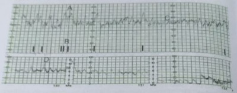
A A, D, B, C
B B, D, C, A
C C, A, B, D
D D, B, A, C
Revisar: possível letra faltando em enunciado
Questão 76 · Vasos estudados · Dopplervelocimetria Doppler · Medicina f etal · 4000026521No perfil hemodinâmico fetal, a circulação placentária é avaliada pelo doppler de:
A artéria cerebral média.
B ducto venoso.
C artéria uterina.
D artéria umbilical.
Questão 77 · Criterios diagnósticos da préeclampsia · Conduta obstétrica · Avaliação da vitalidade f etal · 4000024157Uma gestante com 35 semanas de idade gestacional dá entrada no pronto atendimento obstétrico com queixa de cefaleia intensa e "visão embaçada". Notou ainda que vem urinando pouco ao longo dos últimos dois dias. Ao exame, não há dinâmica uterina, BCF = 90 bpm, e o colo é grosso, pérvio para uma polpa digital ao toque vaginal. Apresenta PA = 160 mmHg x 110 mmHg em duas aferições, frequência cardíaca = 102 bpm, frequência respiratória = 20 ipm e SatO₂ = 97% em ar ambiente. Amostra isolada de urina com 3+ de proteinúria. Considerando esse caso clínico e os conhecimentos médicos correlatos, julgue o item a seguir. O caso deve ser classificado como pré-eclâmpsia grave, devendo-se iniciar indução do parto vaginal com misoprostol e avaliação rigorosa de bem-estar fetal.
A Certo.
B Errado.
Questão 78 · Bases f ísicas da Dopplervelocimentria · Conduta · Artéria umbilical · 4000013548O item a seguir apresenta uma situação hipotética, seguida de uma assertiva a ser julgada. Uma paciente com idade gestacional de trinta semanas apresenta quadro de restrição de crescimento fetal e diástole reversa na artéria umbilical, conforme identi cado por doppler. Nessa situação, a conduta recomendada pelo protocolo da Secretaria de Saúde do Distrito Federal é a administração de sulfato de magnésio à mãe, visando à neuroproteção fetal, com posterior interrupção do parto via alta.
A Certo.
B Errado.
Revisar: possível letra faltando em enunciado
Questão 79 · Cardiotocograf ia CTB · 4000123432Parturiente de 39 semanas e 4 dias, primigesta, chega ao pronto-socorro com queixa de dor em baixo ventre, Nega patologias obstétricas ou clínicas. Ao exame físico, apresenta-se corada e hidratada, PA: 12 x 80mmHg, FC 80bpm. Altura uterina 34 cm, dinâmica uterina 3 contrações fortes em 10 minutos, ao toque vaginal colo com dilatação de 4cm, médio, -1 De Lee. Observe a imagem. Baseando-se na cardiotocografia apresentada, qual é a classificação do traçado e a conduta correta?
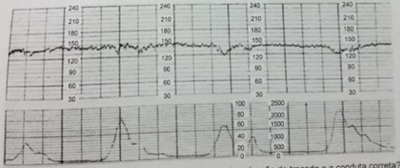
A Categoria III, esforços imediatos para reverter o padrão ou resolução parto.
B Categoria 0, sem conduta específica, controle habitual do trabalho de parto .
C Categoria II, oxigenioterapia e cardiotocografia.
D Categoria I, aguardar resolução parto.
E Categoria II, aguardar a resolução do parto.
Questão 80 · Diagnóstico · 4000123129Mulher, 25 anos, G1P0, 34 semanas de gestação, sem intercorrências vai à consulta pré-natal. Exames de rotina normais. Ganho de peso adequado. Ao exame: normotensa, altura uterina 25 cm; batimentos cardiofetais de 128 bpm; ausência de contrações uterinas. Qual deverá ser a conduta inicial?
A Prescrever corticoterapia.
B Carditotocografia imediata.
C Dopplervelocimetria.
D Perfil Biofísico Fetal.
E Parto cesareana por sofrimento fetal
Questão 81 · Artéria cerebral média ACM · 4000121318Uma gestante secundigesta com parto normal anterior realizou pré-natal, detectando, na rotina de exames iniciais, uma tipagem sanguínea B negativo, Du negativo. Seu obstetra veri cou a tipagem sanguínea do pai, que é A positivo. Assim, solicitou Coombs indireto no sangue materno, que se demonstrou positivo para anti-D, motivo que lhe fez manter solicitação mensal desse exame. Na 28.ª semana de gravidez, o resultado do Coombs era de 1:32. Foi, então, avaliado, por meio de USG Doppler, o pico sistólico da artéria cerebral média e o resultado foi de 1,1 múltiplo de mediana. Nesse caso hipotético, a próxima etapa será
A resolver a gestação.
B solicitar Coombs indireto em quinze dias.
C realizar avaliação semanal do pico sistólico da artéria cerebral média.
D realizar cordocentese para verificar a necessidade de transfusão intrauterina.
E administrar imunoglobulina anti-D.
Questão 82 · Avaliação da vitalidade f etal · 4000116954O método mais utilizado para avaliação de vitalidade fetal intraparto é:
A Dopplerfluxometria.
B Cardiotocografia.
C Ultrassonografia.
D Fetoscopia.
E Dosagem de pH.
Questão 83 · Perf il biof isico f etal PBF · 4000113823Com relação ao perfil biofísico fetal: I - O índice 0 (zero) corresponde ao óbito fetal; II - A cardiotocografia é o primeiro componente a se alterar; III - A glicemia materna não exerce influência sobre as atividades biofísicas fetais; IV - A oligoidrâmnia indica risco para hipoxemia fetal crônica. Está correto apenas o contido em:
A I, II e III
B I e III
C II e IV
D III e IV
E IV
Questão 84 · Cardiotocograf ia intraparto · 4000113704Primigesta, 28 anos de idade, encontra-se na fase ativa do trabalho de parto, apresenta cardiotocogra a conforme a figura abaixo. A dilatação cervical é de 6 cm, bolsa rota, líquido claro. Nesse caso, o tipo de desacelerações da frequênciacardíaca fetal detectada e o próximo passo para o melhor cuidado, respectivamente, são:
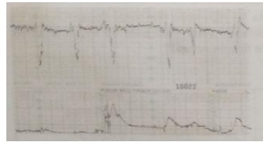
A variáveis; mudança de decúbito
B tardias; expansãovolêmica
C precoces; amnioinfusão
D precoces; cesárea
E Nenhuma das anteriores
Questão 85 · Métodos de avaliação da vitalidade f etal · 4000112267O método mais utilizado para a avaliação da vitalidade fetal intra parto é:
A Dopplerfluxometria
B Cardiotocografia
C Ultrassonografia
D Perfil Biofísico-fetal
Questão 86 · Artéria uterina · 4000111820O laudo de um ultrassom obstétrico realizado com 26 semanas de gestação demonstra presença de incisura protodiastólica bilateral de artérias uterinas. Isso pode significar:
A Risco aumentado de desenvolver Diabete Gestacional.
B Risco aumentado de Restrição de crescimento fetal.
C Centralização fetal neste momento.
D Provável desenvolvimento de macrossomia fetal.
Questão 87 · Artéria umbilical · 4000108090Em relação ao Doppler de artéria umbilical, assinale a alternativa INCORRETA:
A O aumento na relação S/D está associado a aumento da resistência vascular no leito placentário.
B A pré-eclampsia e a restrição de crescimento fetal têm forte relação com alterações do Doppler de artéria umbilical.
C A diástole zero representa comprometimento fetal severo.
D Não tem valor preditivo em caso de gestação gemelar.
Questão 88 · Ducto venoso DV · 4000105782Gestante com 29 semanas é diagnosticada com pré-eclâmpsia grave, restrição de crescimento fetal, insu ciência placentária grave e centralização fetal, com per l biofísico fetal10. Para predição de acidemia fetal utilizamos a dopplerfluxometria do ducto venoso. Identifique o ducto venoso no esquema de circulação fetal demonstrado a seguir.
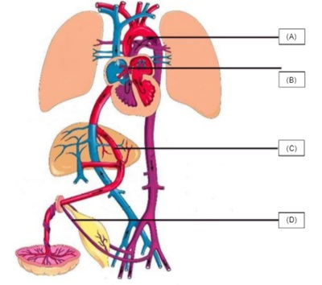
A (VER IMAGEM).
B (VER IMAGEM).
C (VER IMAGEM).
D (VER IMAGEM).
Questão 89 · Perf il biof isico f etal PBF · 4000105749Gestante com 29 semanas é diagnosticada com pré-eclâmpsia grave, restrição de crescimento fetal, insu ciência placentária grave e centralização fetal, com per l biofísico fetal10. Qual dos parâmetros do per l biofísico fetal tem maior dependência da oxigenação do sistema nervoso central?
A Movimento respiratório.
B Tônus corpóreo fetal.
C Movimento corpóreo.
D Indice de líquido amniótico.
Questão 90 · Artéria cerebral média ACM · Conduta · 4000101223Gestante de 32 semanas vem ao PS com queixa de diminuição da movimentação fetal. Até o momento, pré-natal de risco habitual. Foi solicitado ultrassonogra a obstétrica com dopplervelocimetria, com a seguinte imagem em questão: Qual a conduta?
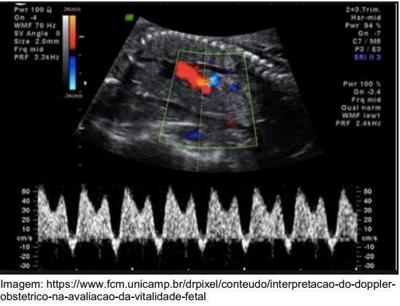
A Amnioinfusão para aumento do líquido amniótico e reavaliação em 12 horas.
B Reavaliação com perfil biofísico fetal em 24 horas.
C Cardiotocografia a cada 6 horas.
D Corticoterapia e resolução da gestação.
Questão 91 · Perf il biof isico f etal PBF · 4000096612Em pacientes com pré-eclampsia grave, ao se instalar a hipoxemia fetal, os primeiros movimentos fetais que desaparecem são
A os de mãos.
B os do tronco.
C os respiratórios.
D os dos membros.
Questão 92 · Métodos de avaliação da vitalidade f etal · Obstetrícia · 4000083377Na assistência pré-natal nas gestações de baixo risco, quando é recomendável indicar métodos biofísicos de análise da vitalidade fetal?
A Sempre que a gestante referir diminuição da movimentação fetal, independentemente da idade gestacional.
B Na gestação prolongada.
C Em qualquer momento durante o pré-natal.
D Rotineiramente, após 37 semanas de gestação.
Questão 93 · Interpretação · 4000070872Jovem de 21 anos iniciou acompanhamento pré-natal em unidade de saúde da família na primeira semana de dezembro de 2017, tendo informado DUM em 28/08/2017. A gestação evoluiu sem intercorrências até maior de 2018, quando a gestante viajou para o interior do estado do Rio de Janeiro e interrompeu seu pré-natal. Ao retornar em 28/06/2018, procurou a emergência da maternidade para atualizar seu acompanhamento. No momento do atendimento, a paciente se encontrava sem queixas, com sinais vitais normais e rotina pré-natal de primeiro trimestre sem alterações. As ultrassonogra as realizadas durante a gravidez, apresentaram os seguintes resultados: 18/11/2017 = IG de 10 semanas; 20/02/2018 = IG de 22 semanas; 29/05/2018 = IG de 35 semanas e 1 dia. Durante o atendimento, foi realizada cardiotocogra a (CTG) que apresentou o seguinte traçado. A análise do traçado da cardiotocografia sugere:
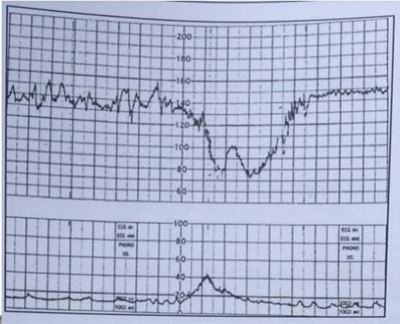
A boa vitalidade fetal
B manobra vagal
C acidose fetal
D oligodramnia
Questão 94 · Perf il biof isico f etal PBF · 4000060953Quando se analisa o resultado de um Per l Biofísico Fetal (PBF), há a obrigatoriedade de se saber a teoria da hipóxia gradual. Dessa forma, a sequência cronológica da deterioração fetal intrauterina é a ausência de:
A Movimento corpóreo, tônus, movimento respiratório, reatividade cardíaca.
B Movimento corpóreo, tônus, reatividade cardíaca, movimento respiratório.
C Reatividade cardíaca, movimento respiratório, movimento corpóreo, tônus.
D Reatividade cardíaca, movimento corpóreo, movimento respiratório, tônus.
E Tônus, movimento corpóreo, movimento respiratório, reatividade cardíaca.
Questão 95 · Bases f ísicas da Dopplervelocimentria · Diagnóstico · Etiologia · 4000054917Com relação à Restrição de Crescimento Intrauterino (RCIU), assinale a alterantiva correta.
A A restrição de crescimento intrauterino tem como principal causa a infecção por citomegalovírus, visto que esse patógeno está associado à aplasia medular fetal.
B A produção deficiente de insulina materna tem sido demonstrada como fator intrínseco à gênese da RCIU.
C A restrição do crescimento intrauterino pode ser tratada pela utilização de anti- hipertensivos de ação central ou pela utilização de betabloqueadores.
D No caso de diástole zero da artéria umbilical, o próximo vaso a ser avaliado é a artéria cerebral média.
E A dopplervelocimetria permite a diferenciação do feto pequeno por insuficiência placentária do feto pequeno constitucional.
Questão 96 · Conduta · Interpretação · 4000049210Na admissão de uma primigesta de 38 semanas e dois dias de gravidez, em trabalho de parto com três contrações de quarenta segundos em dez minutos, com toque vaginal revelando colo pérvio para 5 cm, apresentação cefálica e bolsa íntegra, foi realizada cardiotocogra a com os seguintes parâmetros: linha de base de 126 bpm (batimentos por minuto); variabilidade de 8 bpm; e acelerações e desacelerações ausentes. Considerando essa situação hipotética, assinale a alternativa correta.
A Trata-se de um traçado categoria I da OMS, devendo-se acompanhar o trabalho de parto.
B A ausência de acelerações indica sofrimento fetal agudo, devendo-se resolver a gestação.
C A variabilidade é reduzida, o que pode estar associado a sono fetal, devendo-se realizar estímulo sonoro.
D Trata-se de uma cardiotocografia de categoria II da OMS, devendo-se adotar manobras de ressuscitação fetal e posterior reavaliação.
E Está indicada, nesse caso, a inibição do trabalho de parto, preferencialmente com atosiban.
Questão 97 · Artéria cerebral média ACM · Acompanhamento neonatal · Obstetrícia · 4000040971Tercigesta, 28 anos de idade, com 19 semanas de idade gestacional, apresentando exame de coombs indireto com título=1:32 tipagem sanguínea=O negativo. Considerando o diagnóstico diante deste quadro assinale a melhor opção para o controle da anemia fetal.
A Medida do pico de velocidade sistólica na dopplervelocimetria da artéria cerebral média.
B Dosagem de anticorpos anti-Rh no capilar fetal.
C Medida da circunferência cefálica na ultrassonografia obstétrica.
D Medida da translucência nucal na ultrassonografia.
E Hemograma materno.
Questão 98 · Interpretação · Conduta · Diagnóstico · 4000034218Gestante de 38 anos, G1P0A0, sem comorbidades, com pré-natal sem intecorrências e com 37 semanas e seis dias de gravidez. Ultrassonogra a realizada hoje revela peso fetal estimado e cincunferência abdominal fetal no percentil 3. Per l biofísico fetal 6/8 (perdeu em movimento respiratório). Exame clínico e obstétrico sem alterações. Toque vaginal com colo uterino apagado 50%, centralizado e com 2cm de dilatação. Polo cefálico no plano - 2 de De Lee. Bolsa formada. Cardiotocografia fetal realizada no momento do atendimento com padrão tranquilizador. Diante desse quadro, assinale a MELHOR conduta.
A Internar a paciente para administração de corticoterapia.
B Internar a paciente para cesariana eletiva.
C Internar a paciente para indução do parto.
D Internar a paciente para repetir ultrassonografia com Doppler fetal.
Questão 99 · Indicações · Bases f ísicas da Dopplervelocimentria · Restrição de crescimento f etal RCF · 4000020346Gestante no curso das 31 semanas, com diagnóstico prévio de trombo lia, em uso de anticoagulação pro lática e ácido acetilsalicílico. Realizou avaliação ultrassonográ ca que evidenciou feto com peso estimado abaixo do percentil 10 e Doppler de artéria umbilical com o sonograma apresentado na figura abaixo. Qual a melhor conduta?

A Dopplervelocimetria obstétrica a cada 2 a 3 dias.
B Dopplervelocimetria obstétrica semanal.
C Perfil biofísico fetal diário.
D Indicar o parto.
Revisar: possível letra faltando em enunciado
Questão 100 · Cardiotocograf ia intraparto · Conduta · Interpretação · 4000006556Primigesta, 28 anos de idade, encontra-se na fase ativa do trabalho de parto, apresenta cardiotocogra a conforme a figura. A dilatação cervical é de 5 cm, bolsa rota, líquido claro. Nesse caso, o tipo de desacelerações da frequência cardíaca fetal e o próximo passo para o melhor cuidado, respectivamente, são: Respostas: 1 12 23 34 45 56 67 78 89 100
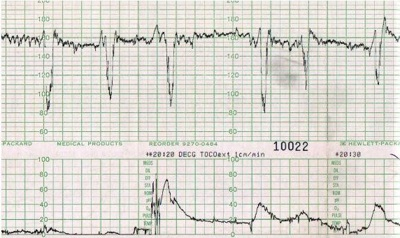
A Precoces; amnioinfusão.
B Tardias; cesárea.
C Variáveis; cesárea.
D Variáveis; mudança de decúbito.
E Tardias, expansão volêmica.